Unity Editor Tool · User Manual
Paper Doll Machine
Bake a modular 3D character into a library of perfectly aligned 2D sprite sheets — one sheet per body part, ready to layer at runtime.
1What this package does
Modular 3D characters are built from interchangeable parts — a head, a chest, a left boot, a right boot, a cape. Paper Doll Machine renders each of those parts into its own 2D sprite sheet, with every sheet framed identically, so you can stack them back together at runtime and swap any single part without re-exporting anything else.
That is what makes it a paper-doll pipeline rather than a plain sprite exporter: because all sheets share one camera framing, the boots from outfit A line up pixel-for-pixel with the chest from outfit B, in every animation and every direction.
What you get
- Modular Library Baker — the main editor window. A section list shows what is set up and what is still missing, and the footer tells you when the bake is ready and how many sheets it will write.
- Preview Sheets tab — stack the baked sheets and step through rows, scrub or play the animation inside Unity, at real size or zoomed with sharp pixels.
- Bake Style asset — a reusable lighting, color and outline profile, so every bake in your project shares one consistent look.
- Isolated bakes — only the character, weapons and shields you assign are rendered. Other characters, the ground and props in your scene are hidden while the bake runs.
- Supersampling (1–8×) with premultiplied-alpha downscaling — smooth sprite edges with no dark halo.
- Ground shadow pass, up to 16 directions, Loop/One-shot aware frame sampling, and a JSON manifest describing everything that was produced.
- Two example characters (Warrior and Mage) with animations, ready-made prefabs, a sample scene and their baked sprite libraries.
Typical uses
- Isometric or top-down RPGs with equipment the player can see and change.
- Turning an existing modular 3D character pack into 2D assets.
- Producing a consistent sprite library for prototypes without hand-drawing every outfit combination.
2Requirements
| Item | Requirement |
|---|---|
| Unity | 6000.4 (Unity 6.4) or newer |
| Render pipeline | Built-in or URP |
| Character rig | An Animator with a Humanoid Avatar |
| Character structure | Parts as separate child GameObjects that can be shown/hidden |
| Animations | One or more AnimationClip assets that play on that rig |
To render one part on its own, the tool toggles GameObject.SetActive on the part objects — the same mechanism most modular character packs already use to switch variants. Your parts therefore need to be separate child GameObjects, not sub-meshes of a single combined mesh.
Everything else in your open scenes — other characters, the ground, props, terrains — is hidden while the bake runs and shown again when it finishes. Nothing is saved to the scene, so you can bake a character that stands next to others.
3Installation & examples
- Import the package into your project. Everything lands in a single
Paper Doll Machinefolder. - Wait for Unity to finish compiling.
- Open the tool from the menu bar: Tools ▸ Paper Bird ▸ Paper Doll Machine ▸ Modular Library Baker.
The package ships as two assembly definitions — a small runtime assembly and an editor-only one — so it compiles independently of your own scripts and is excluded from builds where appropriate.
Paper Doll Machine/Examples contains two modular characters, Warrior and Mage: models, prefabs with an Animator already set up, animator controllers, and the sprite libraries baked from them. Paper Doll Machine/Scene/Sample.unity has both characters placed and ready to bake. Delete the Examples folder once you no longer need it.
4Quick start
This is the shortest path from a character in your scene to a folder of sprite sheets. To try it first, drag Examples/Prefabs/Warrior into a scene and follow along.
- Put your character in the scene and assemble it the way you want it to look by default. The framing is computed from this assembled state.
- Open Tools ▸ Paper Bird ▸ Paper Doll Machine ▸ Modular Library Baker and drag the character's root GameObject into the Character field. The window confirms the Animator and counts the renderers it found.
- Fill the Part Slots by selecting the part GameObjects in the Hierarchy and dropping them onto a slot's Drop button. You can select many at once and drop them all together.
- Add your animations
in Animations, then set each one to
LooporOne-shot. - Choose an output folder
in Output. Keep it inside
Assets/so Unity imports the results automatically. - Press “Generate Sprite Library” at the bottom of the section list. A progress bar shows each entry as it is baked; you can cancel at any time.
- Check the result in the Preview Sheets tab: drop the baked PNGs in, set Directions and Frames, and press Play.
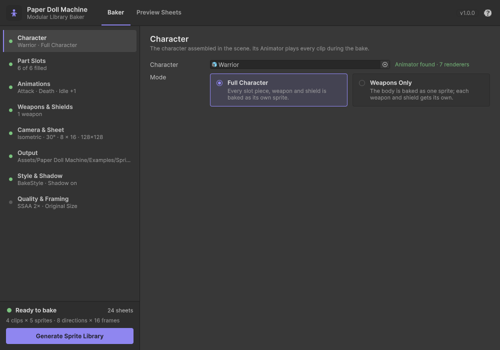
While something is missing, the footer lists the steps left and the Generate button stays disabled, so a bake never starts half set up.
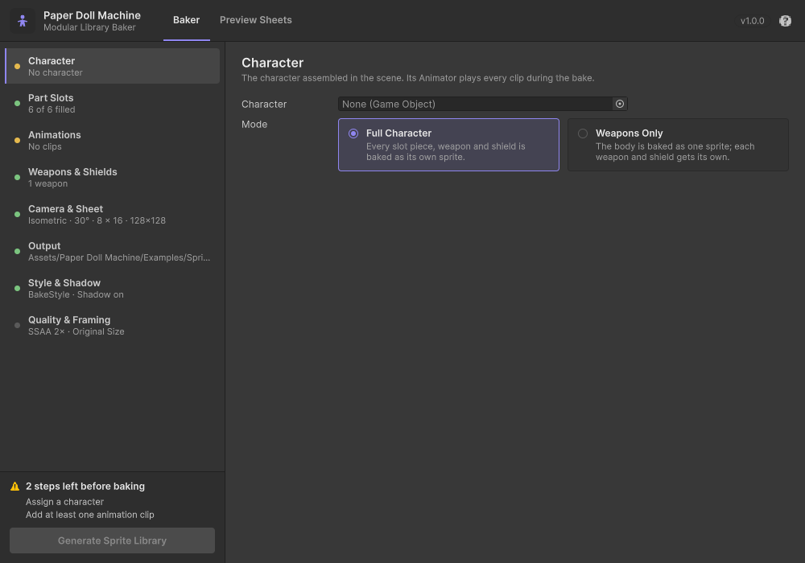
5Slots, Index & suffix pairing
This is the one concept worth reading in full. Everything else in the window is ordinary settings.
A slot is a list of interchangeable variants
A slot such as Chest holds every chest piece your character can wear. Each variant you drop into it becomes its own sprite sheet, so at runtime you pick one chest sheet and draw it.
The Index decides what gets baked together
Every slot carries an Index number. The rule is simple:
- Index used by one slot → each variant in that slot becomes one sprite on its own.
- Index shared by two or more slots → those slots are baked together into a single sprite, matched up by the number at the end of each object's name. The table marks those slots as Paired.
The second case exists for parts that only make sense as a set. Boots are the classic example: you almost never want the left boot of one style with the right boot of another. Give Boot Left and Boot Right the same Index and the tool pairs them automatically:
Boot Left (Index 15) Boot Right (Index 15)
Chr_BootLeft_05 Chr_BootRight_05 → Boot_05.png
Chr_BootLeft_07 Chr_BootRight_07 → Boot_07.pngThe pairing key is the trailing number of the object name — 05 matches 05, 07 matches 07. Parts with no trailing number pair with each other. The resulting sprite is named after the longest common prefix of the slot labels (Boot Left + Boot Right → Boot), followed by that number.
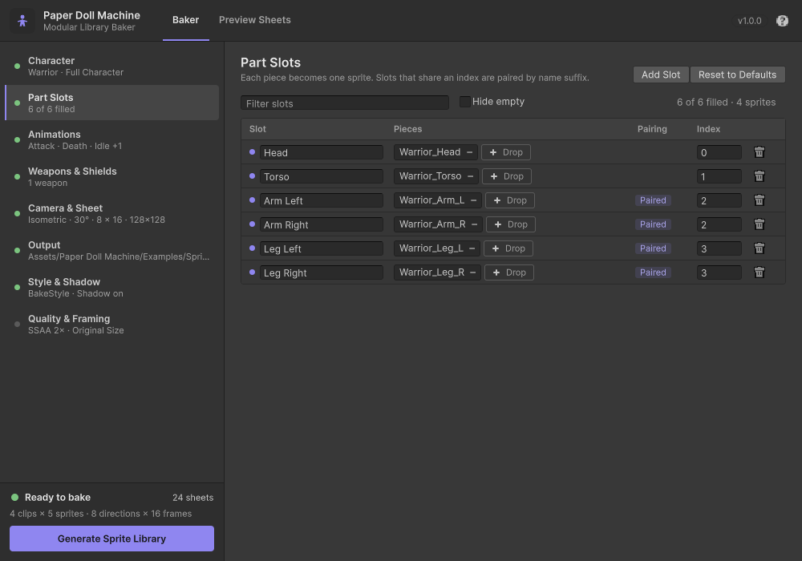
Arm and Leg.Suffix pairing only works when the matching parts end with the same number. If your parts are named differently, either rename them or keep the slots on separate Index values and handle the pairing in your own runtime code.
Single-slot naming
When an Index belongs to just one slot, each sprite is named after the slot label plus the part's trailing number, if it has one:
Chest (Index 4)
Chr_Chest_02 → Chest_02.png
Chr_Chest_09 → Chest_09.pngThe window ships with 17 ready-made slots (Head, Mask, Head Accessory, Cape, Chest, Shoulder L/R, Biceps L/R, Forearm L/R, Elbow L/R, Glove L/R, Boot L/R). Rename them, change their Index, remove the ones you don't need with the trash button, or press Reset to Defaults to bring the original list back.
6The Baker tab
The left column lists the eight sections of a bake. Click one to open it on the right. Each entry shows a one-line summary and a status dot: green when it is set up, amber when it needs attention, grey when it is optional and not in use. The footer below the list shows the bake status and the Generate Sprite Library button; after a bake it also shows the time and folder of the last bake, with a Show in Project button.
Character
The root GameObject of your modular character. It must contain an Animator with a Humanoid Avatar somewhere in its hierarchy; the field confirms it and counts the renderers it found.
| Mode | What it bakes |
|---|---|
| Full Character | Uses the Part Slots. Every part (or paired set) becomes its own sheet, plus one sheet per weapon and shield. This is the full paper-doll workflow. |
| Weapons Only | Ignores the Part Slots, which are greyed out in the section list. Bakes the character exactly as currently assembled into a single Body sheet, plus one sheet per weapon and shield. Use this when only the equipment needs to change. |
Part Slots
Covered in section 5. Each row has the slot name, its pieces, the pairing state, the Index and a remove button. Drop pieces on a row's Drop button; remove one with the − on its chip. Right-click a row to Sort pieces or Clear pieces. Above the table, Filter slots and Hide empty help with long lists, and the counter shows how many slots are filled and how many sprites they produce.
Animations
Drop one or more AnimationClip assets on the drop area — several at once if you like. Every clip is baked for every entry, so ten parts across four animations produces forty sheets. The table shows each clip's length.
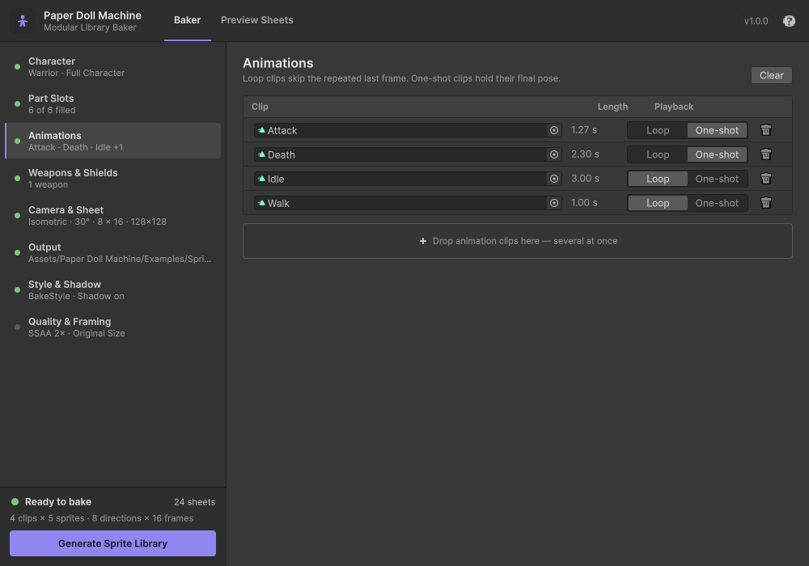
Each clip is set to Loop or One-shot, and the choice changes how frame times are sampled:
| Playback | Use for | Sampling |
|---|---|---|
Loop | Idle, walk, run | Excludes the final instant, because frame 0 is the loop point. Prevents a duplicated frame and makes the cycle stitch seamlessly. |
One-shot | Attack, death, cast | Includes the final instant, so the sprite holds the finished pose. |
Clips arrive as One-shot when dropped; switch the ones that cycle to Loop.
Weapons & Shields
Drop weapon and shield GameObjects on their drop areas. Each becomes its own sheet and is filed under a weapon/ or shield/ subfolder. They are included in the shared framing calculation, so a long spear will not be clipped. Both lists can be sorted or cleared.
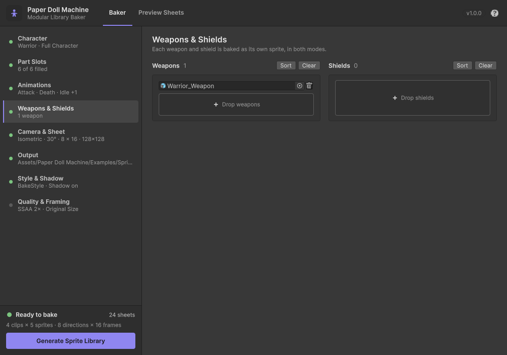
Output
| Setting | Meaning |
|---|---|
| Folder | Destination folder. Keep it inside Assets/ so Unity imports the PNGs; Browse… converts an absolute path automatically, and a warning appears if the folder is outside the project. |
| Split by Direction | Off: one sheet containing every direction. On: one strip file per direction, named with the compass direction (see Direction order). |
| Folder per Clip | Creates one subfolder per animation, keeping large libraries navigable. Weapons, shields and shadows go in their own subfolders. |
The Files written card shows how many files the bake will produce and what their paths will look like, before you press Generate.
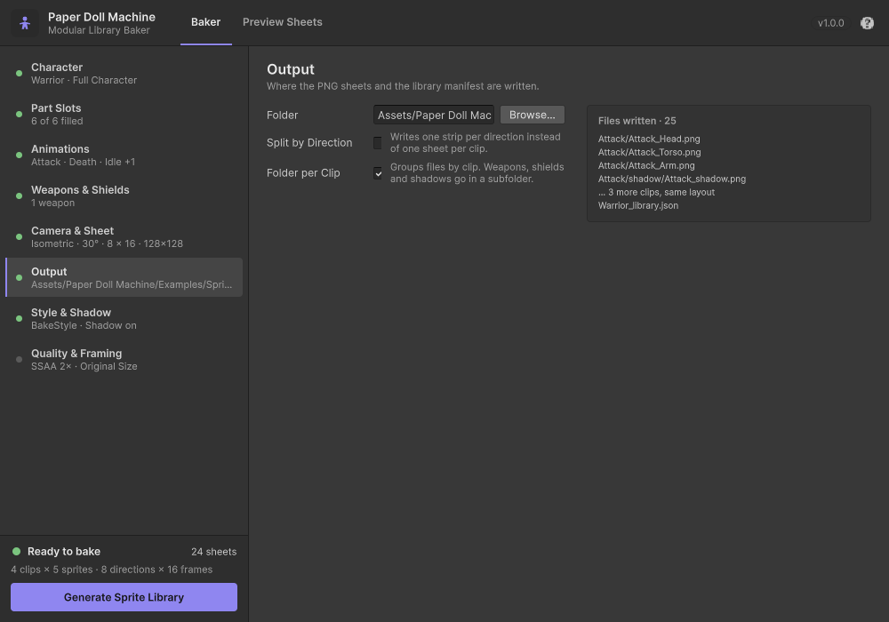
7Camera, style & quality
Sensible defaults are already set; open these sections when you need to change the camera, the sheet resolution, the look or the shadow.
Camera & Sheet
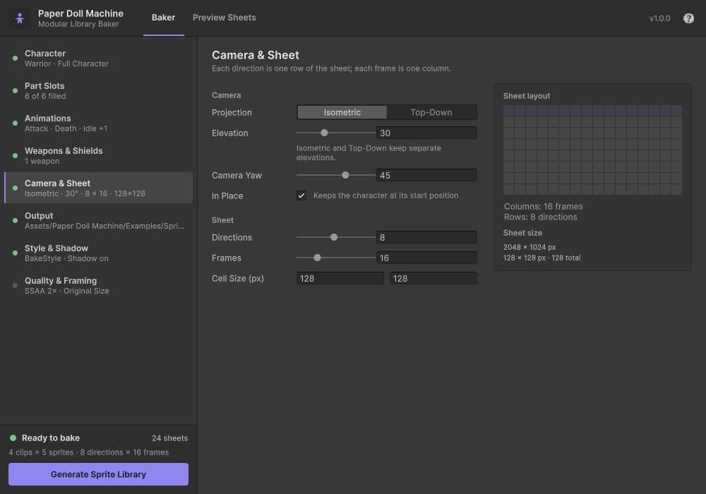
| Setting | Default | Description |
|---|---|---|
| Projection | Isometric | Chooses the camera angle preset. Isometric for classic 2:1 iso; Top-Down for a steeper overhead view. |
| Elevation | 30 / 60 | Camera pitch in degrees, 0–90. Each projection remembers its own value, so switching back and forth never loses a calibrated angle. |
| Camera Yaw | 45 | Camera rotation around the vertical axis, −180 to 180. Shared by both projections. 45° is the classic isometric angle. |
| In Place | On | Pins the character to its start position each frame, so root motion does not drift the sprite out of the cell. |
| Directions | 8 | How many facings to render, 1–16. The character is rotated evenly through a full turn; 8 gives the usual eight-way movement. |
| Frames | 16 | Frames sampled per animation, per direction, 1–64. |
| Cell Size | 128 × 256 | Pixel size of one frame. The sheet is Frames × width by Directions × height. |
Style & Shadow
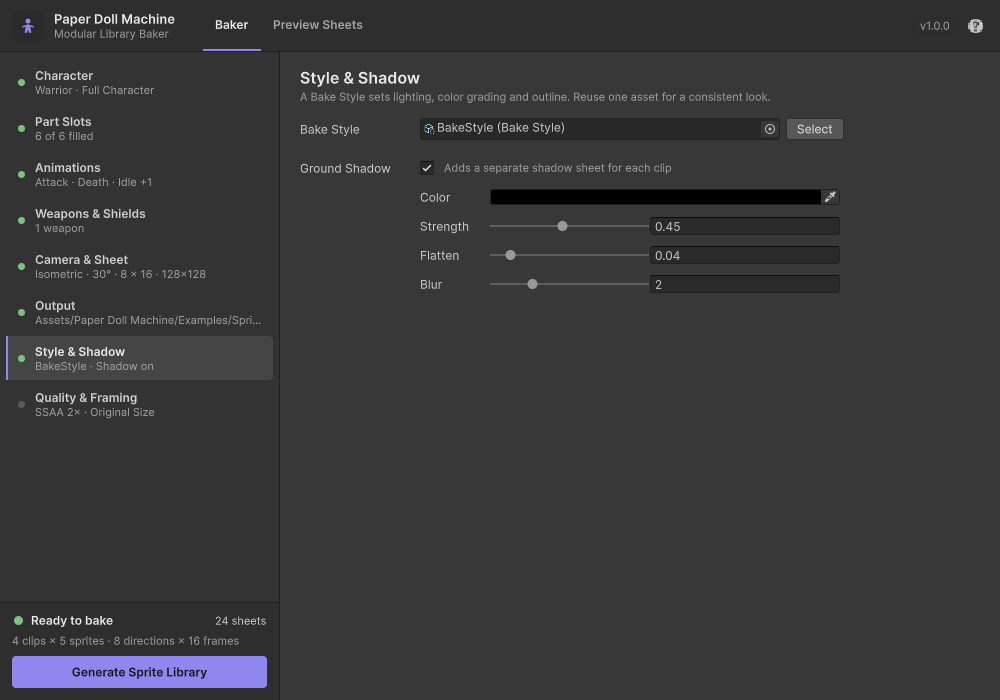
| Setting | Default | Description |
|---|---|---|
| Bake Style | None | Optional lighting and color profile — see section 8. Select selects the asset so you can edit it in the Inspector. |
| Ground Shadow | Off | Produces an extra shadow sheet per clip: the whole assembled character flattened onto the ground. Draw it beneath the character layers at runtime. |
| Color / Strength / Flatten / Blur | black / 0.45 / 0.04 / 2 | Shadow tint, opacity (0–1), how flat the silhouette is squashed (0.01–0.3), and how soft its edge is (0–8 px). |
Quality & Framing
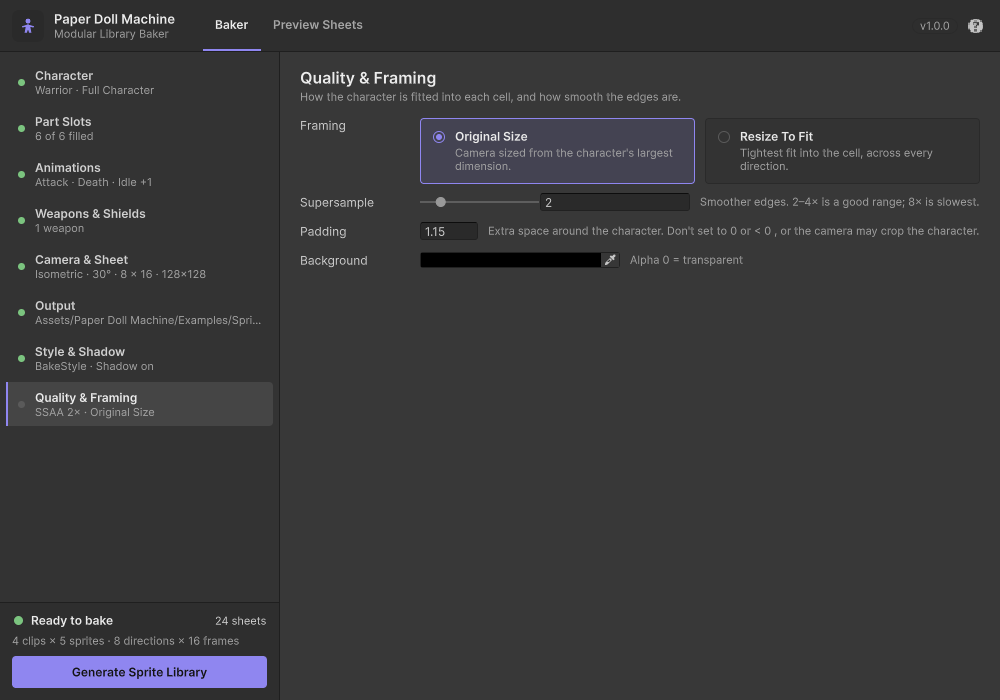
| Setting | Default | Description |
|---|---|---|
| Framing | Original Size | Original Size sizes the camera from the character's largest dimension and keeps its real proportions. Resize To Fit gives the tightest fit into the cell across every direction. |
| Supersample | 1 | Renders at N× the cell resolution and downscales. Edges come out noticeably cleaner, and because the downscale works in premultiplied alpha there is no dark fringe. 2–4 is a good range; 8 is maximum quality and slowest. The factor is reduced automatically if it would exceed your GPU's texture limit. |
| Padding | 1.15 | Breathing room around the character. Raise it if an animation reaches outside the frame. It must be above 0: the field keeps the last valid value if you type 0 or a negative number. |
| Background | Transparent | Sheet background color. Leave alpha at 0 for normal use. |
Framing is calculated once, from the assembled character across all selected animations, and then reused for every entry. That single shared frame is what guarantees parts baked in different sessions still stack correctly — as long as the character's base assembly and these settings stay the same.
8The Bake Style asset
A Bake Style is a reusable look: lighting, rim light, color grading and outline. Assign the same asset to every bake and your whole library stays visually consistent.
Create one with Assets ▸ Create ▸ Paper Bird ▸ Paper Doll Machine ▸ Bake Style, then drop it into the Bake Style field in Style & Shadow. The package includes one ready to use in Paper Doll Machine/BakeStyle.
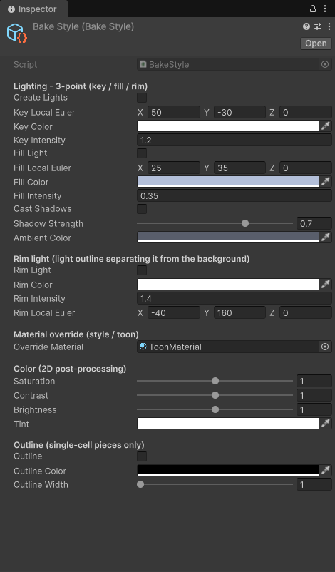
Lighting — 3-point (key / fill / rim)
When Create Lights is on, the tool builds a temporary light rig oriented by the camera, so every direction is lit identically — no part looks darker just because the character turned. This also fixes the common problem of sprites baking out too dark.
| Setting | Description |
|---|---|
| Key (Euler / Color / Intensity) | The main light, positioned relative to the camera. |
| Fill Light | Softens shadows from the opposite side. Turn it down for higher contrast, up for a flatter look. |
| Cast Shadows + Shadow Strength | Lets the key light cast the part's shadow onto itself, darkening recesses and adding directional relief. Each part is baked in isolation, so it only ever shadows itself. |
| Ambient Color | Ambient light used during the bake. Restored afterwards. |
Rim light
A back light that traces the silhouette, separating the character from the background. On by default.
Material override
Point Override Material at a material — a toon shader, for example — and every part is rendered with it, keeping each original base texture. Leave it empty to use the real materials.
Color & Outline
Saturation, Contrast, Brightness and Tint are applied to the finished pixels. Outline traces the sprite's silhouette in a solid color at a width of 1–4 pixels.
Color grading and the outline are 2D post-processing — they exist only in the baked image, never in the Scene view. To judge them quickly, bake one animation with a low frame count as a test before committing to the full library.
9The Preview Sheets tab
The Preview Sheets tab assembles baked sheets back into a character so you can check alignment and timing without leaving Unity.
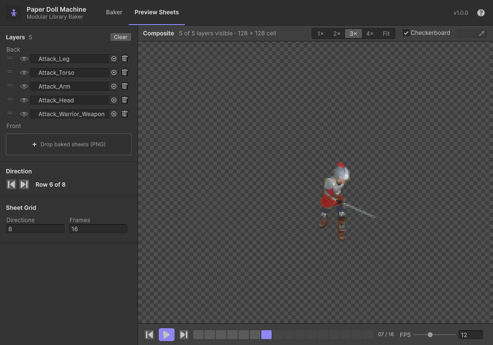
- Drop your sheets on the Drop baked sheets area, several at once.
- Set the Sheet Grid — Directions and Frames as you baked them. The cell size is read from the sheets themselves and shown in the Composite bar; if the layers have different sizes, the bar says so.
- Order the layers by dragging the handle on the left of each row. The list is the draw order: Back at the top, Front at the bottom. The eye hides a layer without removing it; the trash button removes it, and Clear removes them all.
- Inspect — step through the rows with ◀ ▶ (the label shows Row N of M), step frames with the arrows next to Play, click the frame strip to jump to a frame, or press Play and set the FPS.
Use the zoom buttons in the Composite bar to choose how the sprite is shown: 1× is real size, one sheet pixel per screen pixel, and is the default. 2×–4× enlarge it with sharp pixels, and Fit scales it to fill the viewer. Turn the checkerboard off to judge the sprite against a solid color of your choosing.
10Output reference
Sheet layout
A sheet is a grid of cells. Frames run left to right; directions run top to bottom, with direction 0 on the top row.
sheet width = Frames × Cell width
sheet height = Directions × Cell heightWith the defaults (16 frames, 8 directions, 128×256 cells) that is a 2048 × 2048 sheet.
Direction order
Row 0 is the character as it stands in your scene. Each following row turns it by 360 ÷ Directions degrees around its vertical axis, clockwise seen from above.
When Split by Direction is on, each row's file is named with a compass direction:
row 0 South row 4 North
row 1 SouthWest row 5 NorthEast
row 2 West row 6 East
row 3 NorthWest row 7 SouthEastThese names describe the sprites when you bake 8 directions with row 0 facing the camera. To make the character face the camera, set its Y rotation to Camera Yaw + 180 before baking (225 with the default yaw of 45). With another number of directions, go by the row number. Rows past the eighth are numbered dir8, dir9, and so on.
File names
<animation>_<entry>.png e.g. Walk_Chest_02.png
<animation>_<entry>_<Direction>.png e.g. Walk_Chest_02_South.png (split by direction)Folder structure
With Folder per Clip enabled:
Assets/GeneratedSprites/
├─ Walk/
│ ├─ Walk_Chest_02.png ← body parts sit directly in the animation folder
│ ├─ Walk_Boot_05.png
│ ├─ weapon/
│ │ └─ Walk_Sword_01.png
│ ├─ shield/
│ │ └─ Walk_RoundShield.png
│ └─ shadow/
│ └─ Walk_shadow.png
├─ Attack/
│ └─ …
└─ MyCharacter_library.jsonThe manifest
Every bake writes <Character>_library.json to the output folder, describing exactly what was produced. Read it at runtime, or in a build script, to discover the library instead of hard-coding file names:
{
"character": "MyCharacter",
"mode": "FullCharacterAndWeapon",
"directions": 8,
"frames": 16,
"cell_w": 128,
"cell_h": 256,
"split_by_direction": false,
"organize_in_folders": true,
"entries": [
{ "name": "Chest_02", "type": "piece" },
{ "name": "Boot_05", "type": "piece" },
{ "name": "Sword_01", "type": "weapon" }
],
"animations": ["Walk", "Attack"]
}Entry types are piece, body, weapon, shield and shadow.
Importing the sheets
Set the imported textures to Sprite (2D and UI) with Sprite Mode: Multiple, then slice them by cell size using your cell width and height. For crisp pixel results, set Filter Mode to Point and turn compression off. If a sheet is larger than the texture's Max Size (2048 by default), raise Max Size so Unity keeps it at full resolution.
11Troubleshooting
Most problems are caught before the bake starts: the footer lists them and the Generate button stays disabled until they are fixed (see Figure 2).
| Footer message | Cause & fix |
|---|---|
Assign a character | The Character field is empty. Drag the character's root GameObject into it. |
Add an Animator to the character | No Animator was found on the character or its children, so animations cannot be sampled. Add one and set the model's Rig to Humanoid. |
Add at least one animation clip | The Animations list is empty, or its clips are missing. |
The character has no renderers | The assigned object contains no renderers at all. Confirm you assigned the character root and not an empty parent. |
Fill at least one slot, or add a weapon or shield | Nothing was dropped into the Part Slots, Weapons or Shields, so there is nothing to render. In Weapons Only mode, check that the character has visible renderers. |
Choose an output folder | The Folder field in Output is empty. |
Set Padding above 0 (Quality & Framing) | A padding of 0 or less gives the bake camera no size. Set it back to 1.15 or higher. |
If the output folder is outside Assets/, the Output section shows a warning: the files are still written, but Unity will not import them.
Other symptoms
| Symptom | What to check |
|---|---|
| A sheet comes out empty | The part's parent is probably inactive. The tool activates the part itself, but not its ancestors — make sure the chain above it is enabled. |
| The character is clipped at the frame edge | Raise Padding, or switch Framing to Resize To Fit. |
| Parts do not line up with each other | The base assembly or the bake settings changed between bakes. Re-bake the whole library with identical settings. |
| Sprites look dark | Assign a Bake Style with Create Lights enabled; the bake then no longer depends on your scene lighting. |
| Edges look jagged | Raise Supersample to 2–4. |
| Character drifts out of frame during an animation | Enable In Place to cancel root motion. |
| The looping animation stutters | Set the clip to Loop instead of One-shot so the duplicated final frame is dropped. |
| Direction names in split files don't match the sprites | Row 0 is the character as it stands in the scene. Rotate it to face the camera before baking — see Direction order. |
| The preview looks blurry | Use 1× to 4× zoom instead of Fit; whole-number zooms keep pixels sharp. |
| The preview looks stretched | Directions and Frames in the Sheet Grid don't match the sheet. Set them to the values you baked with. |
12FAQ
Does this work with any modular character?
Yes, provided the parts are separate child GameObjects that can be toggled and the rig is Humanoid. The tool makes no assumptions about which character pack you use.
Do other objects in my scene end up in the sprites?
No. Only the character, weapons and shields you assign are rendered; every other renderer and terrain in the open scenes is hidden for the duration of the bake and shown again afterwards. Scene lights still light the character unless a Bake Style creates its own.
Do I have to re-bake everything when I add one new part?
No. Bake the new part on its own; because framing is deterministic, it will line up with the sheets you already have — as long as the base assembly and the bake settings are unchanged. Make a note of the settings you used so a later bake can reproduce them exactly.
Can I bake more than 8 directions?
Yes, up to 16. Directions beyond the eight named compass points are numbered instead.
Does it run at runtime?
No. Baking is an editor-time process; the output is ordinary PNG files that you use however you like at runtime.
Does it generate Animator Controllers or prefabs?
No. It produces sprite sheets plus a JSON manifest, leaving you free to drive them with whatever animation system your project uses.
Which render pipelines are supported?
Built-in and URP. Post-processing is disabled on the bake camera so effects in your scene cannot contaminate the sprites.